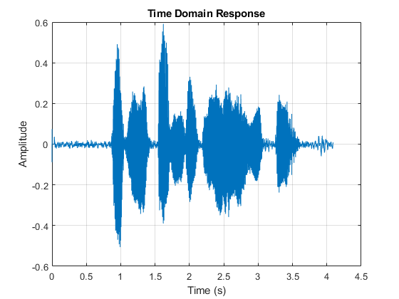

function mult_count = count_multiplies(b, a, is_fir, M)
if is_fir
mult_count = ceil((length(b) - 1) / M);
else
mult_count = length(b) + length(a) - 1;
end
end
function [is_fir, opt_Fp, opt_b, opt_a] = find_optimal_fp(filter_type, fs_stop, nyq, rp, rs, gain, M)
Fp_min = 1000;
Fp_max = fs_stop;
opt_Fp = Fp_min;
opt_b = [];
opt_a = [];
while (Fp_max - Fp_min) > 1
fp_test = (Fp_min + Fp_max) / 2;
wp_test = fp_test / nyq;
ws = fs_stop / nyq;
switch filter_type
case 'Butterworth'
[n, wn] = buttord(wp_test, ws - 500 / nyq, rp, 55);
[b, a] = butter(n, wn);
is_fir = false;
case 'Chebyshev1'
[n, wn] = cheb1ord(wp_test, ws, rp, rs);
[b, a] = cheby1(n, rp, wn);
is_fir = false;
case 'Chebyshev2'
[n, wn] = cheb2ord(wp_test, ws, rp, rs);
[b, a] = cheby2(n, rs, wn);
is_fir = false;
case 'Elliptic'
[n, wn] = ellipord(wp_test, ws, rp, rs);
[b, a] = ellip(n, rp, rs, wn);
is_fir = false;
case 'Parks-McClellan'
fp = 100;
Dpass = 0.10099735734;
Dstop = 2.1134890398e-05;
dens = 20;
[n, Fo, Ao, W] = firpmord([fp, fs_stop] / nyq, [1 0], [Dpass, Dstop]);
b = firpm(n, Fo, Ao, W, {dens});
opt_Fp = fp;
opt_a = 1;
opt_b = b * (gain + 50);
is_fir = true;
return;
case 'Kaiser'
fp = 100;
Dpass = 0.17099735734;
Dstop = 2.1134890398e-05;
[n, wn, beta, type] = kaiserord([fp fs_stop] / nyq, [1 0], [Dstop Dpass]);
b = fir1(n, wn, type, kaiser(n + 1, beta));
opt_Fp = fp;
opt_a = 1;
opt_b = b * gain;
is_fir = true;
return;
end
b = b * gain;
if count_multiplies(b, a, is_fir, M) <= 17
Fp_min = fp_test;
if fp_test > opt_Fp
opt_Fp = fp_test;
opt_b = b;
opt_a = a;
end
else
Fp_max = fp_test;
end
end
end
Passband frequency: 1611.6 Hz
Number of multiplies: 17.0
Chebyshev1
Passband frequency: 1811.5 Hz
Number of multiplies: 17.0
Chebyshev2
Passband frequency: 1811.5 Hz
Number of multiplies: 17.0
Elliptic
Passband frequency: 2924.8 Hz
Number of multiplies: 17.0
Parks-McClellan
Passband frequency: 100.0 Hz
Number of multiplies: 8.0
Kaiser
Passband frequency: 100.0 Hz
Number of multiplies: 17.0


clc; clear; close all;
load projIB.mat
FsIn = 44100;
max_multiplications = 17;
Fst = 4000;
max_gain_passband = 40;
min_gain_passband = 37;
max_gain_stopband = -55;
Ast = max_gain_passband - max_gain_stopband;
Rp = max_gain_passband - min_gain_passband;
gain = 10^(min_gain_passband/20);
nyq = FsIn / 2;
M = 4;
filter_types = {'Butterworth', 'Chebyshev1', 'Chebyshev2', 'Elliptic', 'Parks-McClellan', 'Kaiser'};
for i = 1:length(filter_types)
fprintf('\n%s\n', filter_types{i});
[is_fir, fp, b, a] = find_optimal_fp(filter_types{i}, Fst, nyq, Rp, Ast, gain, M);
if is_fir
current_filter = dsp.FIRFilter(b);
else
current_filter = dsp.IIRFilter(b,a);
end
figure; freqz(current_filter);
output = current_filter(noisy);
downsampled_signal = downsample(output,M);
mults = count_multiplies(b, a, is_fir, M);
fprintf('Passband frequency: %.1f Hz\n', fp);
fprintf('Number of multiplies: %.1f\n', mults);
figure;
plot((1:length(downsampled_signal)) / (FsIn/M), downsampled_signal);
grid on;
title('Time Domain Response');
xlabel('Time (s)');
ylabel('Amplitude');
soundsc(downsampled_signal, FsIn/M);
pause(length(downsampled_signal) / (FsIn/M) + 1);
end
Butterworth